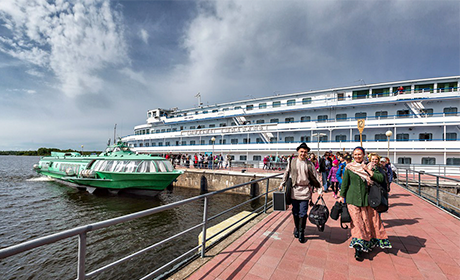

Музей на острове Кижи
Кижи — остров в Онежском озере, в 68 км от столицы Карелии — Петрозаводска.
На острове расположен музей традиционной крестьянской культуры Русского Севера, один из крупнейших и известнейших в России музеев-заповедников под открытым небом. В нём собраны памятники архитектуры, иконописи и предметы быта, которые создавались в карельских, вепсских и русских деревнях на протяжении столетий.
Протяженность острова – 5,5 км.
